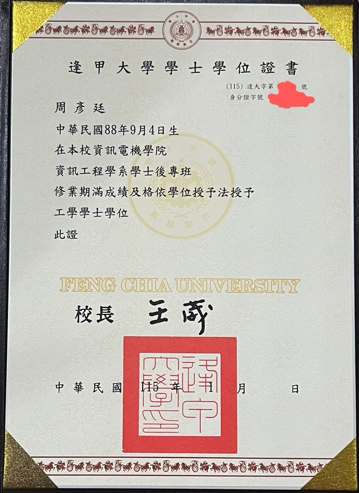
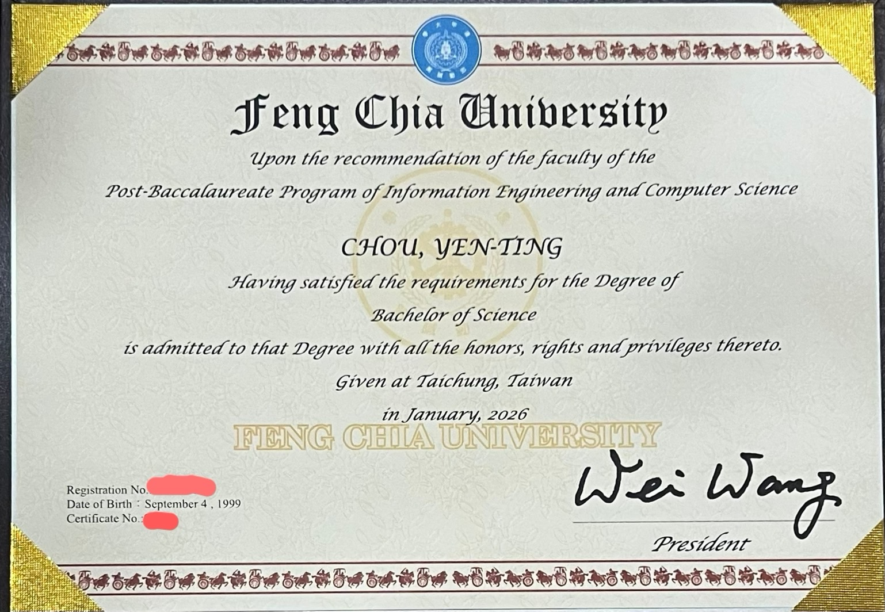
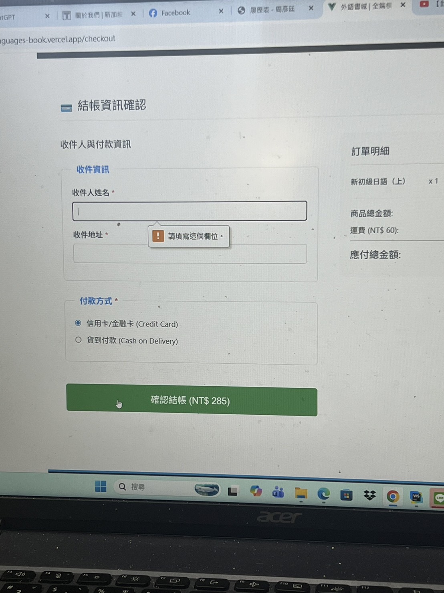
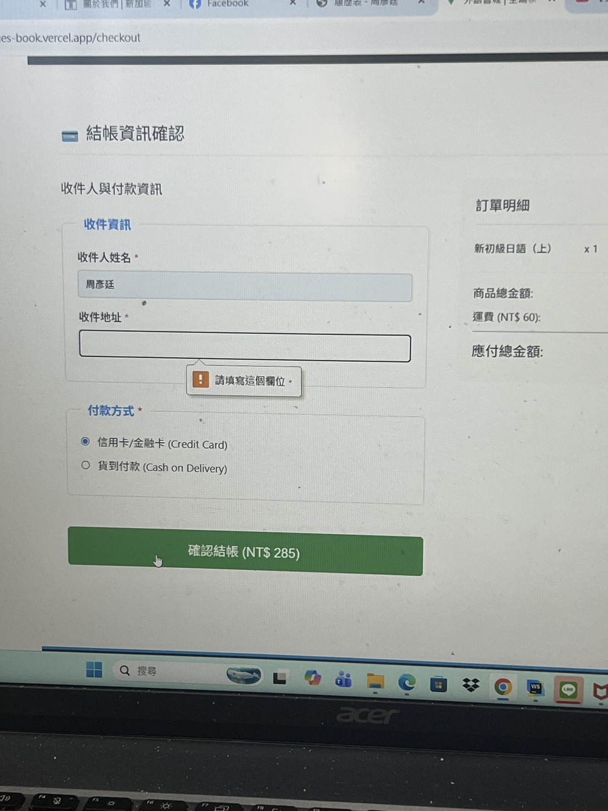
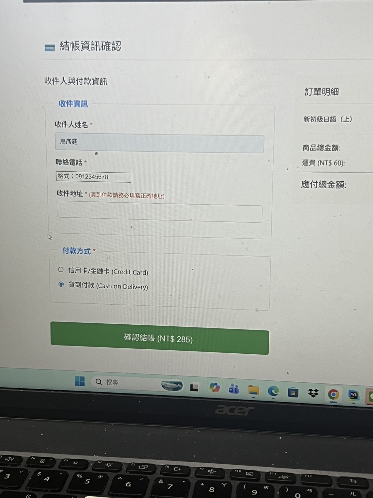
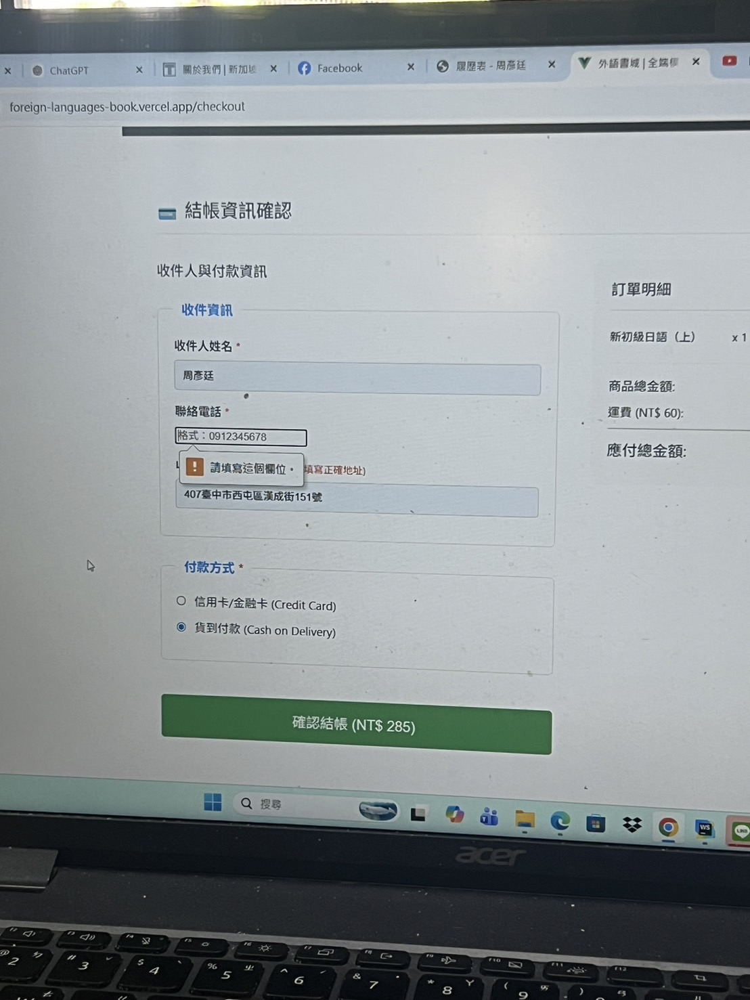

周彥廷
📧 Email: zhouyanting19990904@gmail.com（主要）| chou.yenting@gmail.com（備援）
📱 Phone: 0977-203-867
內容目錄 Contents
- 關於 viewport 設定
- 我的社交帳號 Social Apps
- 工作經歷 Working Experience
- 🎓 學歷 Education
- 💻 技術經歷 Technical Experience
- 📜 證照 Certifications
- 語言能力 Languages
- 📜 大學畢業證書 Bachelor's Degree Certificate
- 汽車駕照（自排） Car Driving License (Automatic Transmission)
- 普通重型機車駕照 Motorcycle License (Standard Heavy)
- 🛠️ 技能 Skills
- 🌐 全端實戰作品集 Full-Stack Development Projects
- 📂 前端作品集 Front-End Projects
關於 viewport 設定：
在此履歷中，我刻意移除了<meta name="viewport"> 設定，以維持桌面版程式碼截圖的原始寬度與排版。這樣可以確保程式碼截圖在手機或平板上仍呈現完整可讀的字體大小與排版，不會因瀏覽器自動縮放而變得過小或扭曲。
對於技術履歷而言，程式碼的清晰可讀性比自動響應更重要，因此選擇以固定寬度呈現。
補充說明（技術面）：
在網頁設計中，
在網頁設計中，
<meta name="viewport"> 用來控制頁面在不同裝置的縮放比例與寬度。移除它可以防止瀏覽器自動縮小程式碼截圖，保持桌面版原始排版。
💼 工作經歷 Working Experience
EAP 自動化開發工程師
2026 年 6 月 - 至今
建準電機工業股份有限公司 (SUNON) — 企業主動邀約面試錄取
- C# 後端架構與自動化控制： 運用 C# .NET 進行 EAP 核心程式撰寫與功能優化，設計 Heartbeat 心跳連線點檢與 Alarm 異常處理機制；高效處理機台參數存取（XML/JSON 序列化）與業務邏輯，精準掌握物件導向（OOP）與異常捕獲（try-catch）流程。
- 前端介面開發與數據整合： 結合 Vue.js (Vue 3)、JavaScript 與純 HTML/CSS 技術，規劃與建構自動化系統之前端監控面板，處理即時生產數據與狀態呈現，提升製程視覺化管理之流暢度。
- 資料庫管理與規格逆向： 負責工廠端資料庫（Oracle / SQL Server / MySQL）的數據存取與持久化策略，串接 MES 與機台間的 Recipe (配方) 下發防呆；並透過解析 Excel 點檢表與 API 規格書，獨立建構 AOI 設備模擬器以進行通訊測試。
- 工業通訊與流程改善： 負責生產線自動化流程改善提案，逐步深入機台對接測試，研習 MC Protocol、Modbus TCP 等工業通訊協定，實現 EAP 系統與實體機台 PLC 暫存器（Register）間的高速數據交握。
🎓 學歷 Education
-
逢甲大學 資訊工程學系 學士後專班
2025 年 2 月 – 2026 年 1 月 -
國立嘉義大學 外國語言學系（應用外語組）– 學士
2020 年 9 月 – 2023 年 6 月 -
國立臺灣海洋大學 電機工程學系（肄業）
2018 年 9 月 – 2020 年 2 月
💻 技術經歷 Technical Experience
-
恆逸教育訓練中心 – Java 全端工程師課程（2024年3月7日 - 2024年7月1日）
後端：Java、Java Servlet、JSP
前端：HTML、CSS、JavaScript
資料庫：MySQL
說明：了解 Client–Server 架構，熟悉 Servlet 與 JSP 協作流程（MVC 初階概念） -
逢甲大學 – 資訊工程學系學士後專班（2025年2月12日 - 2026年1月7日）
後端：Java、Spring Boot（IntelliJ IDEA）
前端：Vue 3、Vite、Pinia（WebStorm）
資料庫：Supabase（PostgreSQL）
測試與除錯：JUnit 單元測試
前端技術：RWD 響應式設計
部署：GitHub Pages、Vercel、Render
說明：具備前後端分離、RESTful API 建置能力，能完成開發 → 測試 → 佈署全流程
📜 證照 Certifications
- TOEIC 740

- JLPT N3

- TQC+ Python

- ITS Java

- 恆逸結業證書

語言能力 Languages
- 中文：母語，能流暢進行所有溝通與書寫
- 英文：TOEIC 740 — 能有效閱讀技術文件、理解英文教學內容，具備基本職場溝通與協作能力
- 日文：JLPT N3 — 能進行日常對話，理解常見網站 UI 與基礎技術內容
📜 大學畢業證書 Bachelor's Degree Certificate




汽車駕照（自排） Car Driving License (Automatic Transmission)

普通重型機車駕照 Motorcycle License (Standard Heavy)

🛠️ 技能 Skills
💡 程式語言 Programming
- Java（主力）
- Python
- JavaScript
🖥️ 後端 Back-End
- Spring Boot
- Java Servlet
- JSP
- RESTful API
- JUnit 單元測試
🌐 前端 Front-End
- Vue 3 / Vite / Pinia
- HTML / CSS / JavaScript
- RWD 響應式設計
📊 資料庫 Databases
- PostgreSQL（Supabase）
- MySQL
- H2
🛠️ 工具與部署 Tools & Deployment
- IDE：IntelliJ IDEA / WebStorm（前後端專業分流開發）
- 版本控制：Git / GitHub（代碼管理與自動化流程）
- 容器化技術：Docker（後端服務環境封裝與部署）
- 雲端託管：Render（後端容器部署）/ Vercel & GitHub Pages（前端 SPA 部署與靜態託管）
- 路由優化：實作
vercel.jsonRewrite 規則，解決 SPA 生產環境刷新 404 問題
🤝 軟技能 Soft Skills
- 跨領域學習能力
- 團隊合作與溝通
- 問題解決能力
- 自主學習
🌐 全端實戰作品集 Full-Stack Development Projects
-
外語學習書城：全端商務管理系統
[雙端分流：B2C 互動系統 + Admin ERP]
技術棧： Java (Spring Boot 3, Spring Security, JPA) / Vue 3 (Composition API, Pinia) / PostgreSQL / Docker / Render / Vercel / GitHub Pages-
無狀態認證與法律合規性設計 (Security & Compliance)：
採用 JWT (JSON Web Token) 實作前後端分離認證機制，確保 API 存取安全性。憑藉專業的法律與安全意識，主動於系統支付流程中實作 Demo 模式警示機制，明確標註「模擬交易」警語以符合虛擬實作之法律規範，並體現對用戶個人資料安全防護的嚴謹態度。 -
銷售前台——動態互動評論與 UGC 數據時序管理：
實作用戶生成內容 (UGC) 模組，透過 JPA 實體關聯 標籤@ManyToOne(fetch = FetchType.LAZY)建立Review與Book、User間的高效數據鏈條。
除了結合 Spring Security 確保只有登入用戶可發布內容外，更實作了 時序排序邏輯 (Chronological Ordering)：確保系統能依據資料庫記錄之精確時間戳 (Timestamp) 自動過濾並呈現「最新評論於首位」。
在資料展現層實作了 數據格式化處理：資料庫底層採用@CreationTimestamp完整紀錄至分秒之精確值，前端則配合 UI 規範優化為僅顯示日期格式，展現兼顧後端數據完整性與前端視覺簡潔性的設計素養。
另外，雖然目前評論區採用純文字渲染以模擬社群平台（如 IG、TikTok）的防詐騙與流量保護機制，但未來可規劃 『白名單網址解析』 功能，僅允許內部書籍連結或特定受信任域名自動轉化為可點擊連結，平衡開發靈活性與安全性。
以上描述如下截圖所示：


-
銷售前台——多維度檢索與支付狀態機閉環：
實作 14 種學習語系篩選（下拉式選單）與關鍵字（書名、作者名、國際書號）複合搜尋。針對信用卡與 COD 設計異質 訂單狀態機 (Order State Machine)，包含AWAITING_PAYMENT原子中間狀態以防止支付漏洞，並應用@Transactional達成庫存自動補償。如下截圖所示（@Transactional的部分請參見OrderService.java）：


-
用戶端——條件式表單驗證與異質支付邏輯：
針對不同支付途徑實作動態欄位驗證 (Conditional Validation)，確保結帳數據的完整性：
1. 信用卡支付：強制驗證「收件人姓名」與「完整收件地址」，作為後端金流合規性之必要參數。
2. 貨到付款 (COD)：動態切換驗證權重，強制要求「聯絡電話」與「收件地址」，以支撐物流配送之通訊鏈條。
前端透過 Vue 3 響應式狀態實作 防錯機制 (Poka-yoke)，在觸發 API 請求前攔截無效數據，並配合後端@Transactional事務保護，確保異質支付流程下的數據一致性。如下截圖所示：




-
用戶端——全週期訂單紀錄與狀態追蹤 (Order History & Lifecycle)：
實作用戶端「我的訂單」頁面，透過 JPQL 關聯查詢 並配合OrderByCreatedAtDesc讓用戶能即時回溯過往交易紀錄。
除了結合訂單狀態機展示AWAITING_PAYMENT至COMPLETED的動態生命週期外，更在用戶端同樣採用 Master-Detail (主從式資料) 佈局 ：用戶可展開查看包含書籍名稱、單價與收件地址的詳盡明細，確保前後端數據流（Data Flow）的高度一致性。
在安全性層面，於 Service 層執行嚴格的 「身分歸屬權檢查」，確保用戶僅能透過其專屬之 JWT 憑證獲取自身訂單數據，有效防止越權存取（IDOR）風險。如下截圖所示：


-
管理後台——權限生命週期與資料建模 (Admin Dashboard)：
獨立開發會員管理模組，實作基於 RBAC 的權限隔離。提供「一鍵啟用/停權」邏輯以調控帳號生命週期，並針對系統迭代實作資料欄位容錯處理，確保在 Schema Evolution (資料表演進) 時系統仍能穩定運行。如下截圖所示：

-
管理後台——全功能書籍 CMS 與多語言數據管理：
於後端定義專屬LanguageEnum 實體 封裝 14 種語系與顯示名稱。前端實作互動式彈窗表單、封面預覽與上架狀態動態開關，實現對商品價格、庫存與多語系數據的高效調控。如下截圖所示：


-
管理後台——高透明度訂單監控與 Master-Detail 佈局：
設計訂單營運中心，採 Master-Detail (主從式資料) 佈局展示收件地址、費用明細與商品項目。管理員可即時追蹤訂單流轉狀態並手動更新，體現處理複雜 UI 數據同步之能力。如下截圖所示：


-
生產環境部署優化與 SPA 路由重定向：
獨立完成 Docker 容器化部署。針對生產環境下「頁面刷新導致 404」之典型衝突，透過配置vercel.json的 Rewrite 轉發規則 重新定義請求路徑，確保前後端無縫銜接。 -
作品Demo影片：
-
無狀態認證與法律合規性設計 (Security & Compliance)：
-
即時天氣觀測站：第三方 API 整合與跨雲端部署實踐
[外部數據整合與連通]
技術棧： Java (Spring Boot 3) / Vue 3 (Composition API, Pinia) / Axios / Weather API / H2 / Docker / Render / GitHub Pages-
跨域通訊與部署策略：
前端部署於 GitHub Pages、後端部署於 Render，實作動態 Base URL 切換邏輯，並配置 Spring CORS 策略，確保跨域請求安全且可用。 -
第三方 RESTful API 整合：
後端串接 WeatherAPI 擷取即時氣象資料，並在 Service 層處理異常與 fallback，確保開發與正式環境皆可穩定運作。 -
狀態管理與數據持久化 (CRUD)：
利用 Pinia 建立響應式狀態中心，協調搜尋結果與歷史紀錄組件間的資料同步。結合 H2 嵌入式資料庫 實作搜尋足跡持久化，確保用戶能在應用程式生命週期內追蹤檢索紀錄。 -
生產環境靜態部署優化：
獨立解決 GitHub Pages 子路徑下的 Asset 資源路徑偏移問題 (Vite Base Path)，並撰寫自動化部署腳本提升發布效率，確保 SPA 專案在雲端環境穩定渲染。 -
雲端環境冷啟動 (Cold Start) 診斷與優化：
針對 Render 免費版伺服器之休眠機制，深入分析並診斷出AxiosError: timeout of 10000ms exceeded的成因。透過調整前端 Timeout 超時策略 至 60 秒，並結合 UI 層級的 Loading 狀態引導，有效緩解伺服器從休眠狀態喚醒時的時延問題，展現對異構平台通訊穩定性的處理能力。 -
雲端原生環境之時區一致性診斷 (Timezone Divergence)：
深入分析並定位後端LocalDateTime.now()產生的 8 小時時差成因，辨識出 Render 雲端環境採用 UTC (格林威治標準時間) 之預設特性。本專案刻意保留此顯示邏輯並於前端實作「技術限制說明」，藉此展示對分散式系統中伺服器原生時區、JVM 預設行為與用戶在地化需求（Localization）差異的敏銳度與專業處理策略。 -
Web 生態整合與社交擴散優化 (Social Sharing & Web API)：
實作基於 Web Share API 與社群平台封裝連結（FB、Line、X）的分享機制。透過動態網址編碼（URL Encoding）確保跨平台傳遞的穩定性，並利用原生 API 提供行動端無縫的分享體驗，展現對產品完整度與用戶成長策略（Growth UX）的實踐。 -
前端資料清洗與狀態一致性 (Data Sanitization & Consistency)：
針對歷史紀錄中可能出現的重複檢索數據，實作了基於 Map 物件的去重演算法 (Deduplication)。確保 UI 層級僅呈現不重複的最近搜尋城市，並透過自定義排序邏輯解決非同步請求下的 UI 標籤跳動問題 (Flickering)，展現對細膩用戶體驗與數據流管理的掌握。 -
快取機制與數據持久化衝突診斷 (Cache Side-Effect Mitigation)：
深入診斷並解決 Spring Boot@CacheableAOP 攔截機制導致 Repository 寫入邏輯失效的問題。透過重新配置業務邏輯與緩存切面，確保在提升查詢效能的同時，依然維持搜尋紀錄的即時持久化（Persistence），展現對框架底層副作用的掌控與複雜數據流一致性的處理能力。 -
CI/CD 自動化部署與生產環境維護：
實作基於 GitHub Webhooks 觸發之 Render 自動化部署流程。確保後端 Java 業務邏輯變更（如持久化邏輯優化）能透過版本控制系統（Git）同步推播至生產環境，並結合遠端伺服器日誌（Logs）進行實時監控與除錯，展現對完整軟體開發生命週期（SDLC）與自動化運維的理解。如下截圖所示：

-
全局共享持久層與數據一致性實踐：
利用 H2 記憶體資料庫 實作全局搜尋紀錄儲存，模擬分散式架構下多終端存取單一持久層的行為。藉此觀察到「跨裝置紀錄同步」之現象，並深入探討 Multi-tenancy (多租戶隔離) 與伺服器端狀態管理的取捨。 -
跨端分享行為之環境感知 (Environment Awareness)：
深入分析 Web Share API 在行動端原生系統與 PC 端瀏覽器間的行為差異。針對社群平台（如 Facebook, Line）網頁版 API 的參數傳遞限制，於 UI 層實作技術揭露說明，展現對跨平台整合限制的理解與產品透明度。 -
響應式視圖與互動邏輯優化 (User Interaction & Logic Flow)：
靈活運用v-model實作視圖與狀態的雙向資料同步，並結合@keyup.enter鍵盤修飾符與:disabled動態屬性綁定。實作非同步請求狀態下的「前端防呆機制」，有效防止重複點擊導致的併發請求，確保系統通訊之原子性與穩定。 -
高效能條件渲染與 DOM 管理策略 (Rendering Optimization)：
辨析並實踐v-if（DOM 銷毀與重建）與v-show（CSS Display 切換）之差異。在初始載入時利用v-if延遲渲染（Lazy Rendering）天氣卡片與歷史清單，優化首屏加載效能（First Meaningful Paint），減少不必要的 DOM 負擔。 -
動態列表渲染與 Virtual DOM 效能實踐 (List Rendering & Diffing)：
利用v-for搭配具備唯一性的:key屬性（選用資料庫 ID），將搜尋歷史高效渲染為互動式標籤（History Tags）。透過優化 Key 值選取提升 Vue 內部 Diff 演算法之效率，並結合 Pinia 狀態管理達成歷史紀錄與即時查詢間的無縫數據一致性。 -
組件生命週期應用與資源回收 (Component Lifecycle & Resource Cleanup)：
深入運用onMounted生命週期鉤子進行初始數據檢索，並在組件切換過程中利用v-if之卸載（Unmount）特性，自動終止多媒體資源播放與非同步連線，展現對瀏覽器資源生命週期管理與記憶體優化的掌握。 - 前端與後端的GitHub Repository網址分別如下：
-
作品Demo影片（手機版）：
-
作品Demo影片（電腦版）：
-
跨域通訊與部署策略：
📂 前端作品集 Front-End Projects
共通特色
以下所有專案均有以下共通技術與功能：
- 錨點導航技術：
內容較多的頁面均附有錨點導航，讓瀏覽者能快速跳轉到感興趣的主題。 - Google Translate API 整合：
提供多語言翻譯功能，支持國際化。 - 服務整合：
整合 Facebook、Line、X (Twitter) 的 URL 動態分享功能。 - 社群互動與 SDK 整合：
曾整合 Facebook Comments SDK，實現用戶生成內容 (UGC) 的互動功能（該外掛已於 2026 年 2 月 10 日停用）。
-
JLPT N3 多媒體互動教學與檢測平台（共17個子網頁）
技術棧： HTML5 / CSS3 / Vanilla JavaScript / Web Speech API- 互動式語音合成 (TTS) 應用：
深度整合瀏覽器原生 Web Speech API，實作多語系（ja-JP / zh-TW）語音播放。針對教學需求自定義語速（Rate）與音調（Pitch）參數，並透過狀態管理（Cancel/Speak）確保高頻次點擊下的語音流暢度。 - 檢索、篩選與自動批改邏輯：
利用純 JavaScript 實作即時表格搜尋演算法（機場用語）與多維度資料過濾系統（家族稱謂分類）。此外，開發具備 DOM 遍歷能力的動態測驗評分系統（助詞測驗），實作即時回饋報告與正確率統計，展現紮實的邏輯處理與資料狀態管理能力。 - 複雜資料結構視覺化：
針對日文 12 種以上動詞活用（TE/TA/使役被動）及 12 大調樂理術語，設計高易讀性的對照表格結構。結合 CSS 偽元素（::before）實作跨裝置一致的漢堡選單導航介面。 - UX 決策與多媒體優化：
整合 YouTube Iframe API 與原生 Video 標籤，並實作 Lazy Loading 與多媒體響應式適配。針對長句閱讀需求，有意識地調整佈局決策（如移除部分頁面 Viewport 標籤）以確保最佳排版穩定性。 - 知識轉化與個人背景：
將個人考取 JLPT N3 及 Python 證照 的學習方法數位化，實作包含 20 餘首樂曲的互動歌單與教學文案，展現強大的資訊邏輯分類與跨領域技術整合能力。 - 跨語言文法邏輯對比與結構化設計：
系統化梳理英文不定詞 (to do) 與動名詞 (doing) 隨動詞（remember、forget、regret、happen）語意轉折的機制，並對應整合日文「連用形（ます語幹）複合動詞」與「た形」表達方式，建構清晰易懂的跨語系學習對照架構。 - 複雜對照表格與多維度清單排版：
針對多組易混淆句型設計高易讀性的 CSS 響應式對照表格與區塊卡片（Grid Layout），精準呈現日文複合動詞（如〜忘れる、〜慣れる、〜始める）的拆解邏輯與語感差異，提升技術文件與教學內容的資訊傳遞效率。 - UI/UX 與行動裝置適配優化：
延續平台一致的導覽架構，實作支援手機端左右滑動的目錄列（Scrollable Nav）與摺疊式漢堡選單，兼顧跨裝置閱讀體驗。
- 互動式語音合成 (TTS) 應用：
-
數位音樂系統分析與 Web 實務應用（共17個子網頁）
技術棧： HTML5 / CSS3 / 原生 JavaScript / PWA (Service Workers) / Web Audio API / MIDI.js
-
多媒體資源生命週期與框架渲染機制研究：
深度對比原生 DOM 操作與 Vue 3 Unmount 銷毀機制。針對原生開發中僅以 CSS 隱藏元素導致影音背景播放與資源佔用的痛點，分析 DOM 節點移除對硬體資源回收的影響，並實作手動資源管理邏輯以優化瀏覽器效能。 -
系統級音訊行為診斷與 HCI 互動分析：
探討 iOSAVAudioSession與 AndroidAudioManager的音訊通道設定。解構為何 Perfect Piano 能避開系統靜音模式，並針對數位樂器「視聽不連貫」現象提出人機互動（HCI）視覺回饋優化方案。 -
前端音訊特徵合成與聲學物理動態模擬：
基於 Web Audio API 與 Tone.js 實現多模式訊號產生器（Oscillator），分析不同幾何波形（三角波、鋸齒波、方波）的諧波結構（Harmonic Structure）對聽覺認知的影響。實作動態音色切換架構，透過在前端動態注入包絡線參數（ADSR Envelope），精準控制音訊觸發時的爆發力（Attack）與釋放（Release）物理波形，克服傳統 Web 合成器音色生硬與 8-bit 紅白機方波感痛點。並深度分析行動作業系統（iOS/Android）在「環境音效（Ambient）」類別下的硬體層級音訊攔截機制，提供完整的跨平台相容性解決方案。 -
MIDI 通訊協議與數據流整合：
解構 MIDI 十六進位數據結構（如0x90Note On）。實作跨軟體工作流：將原始演奏數據轉譯為 MuseScore 數位樂譜與 Marble Music 動畫，達成聽覺與視覺的數據同步驗證。 -
PWA 離線緩存機制與 Service Worker 研發：
研究 Progressive Web App (PWA) 規範，實作基於Cache-First策略的 Service Worker。調試生命週期中的非同步處理邏輯，探討大量影音樣本在有限快取空間（Quota Management）下的攔截策略。 -
音訊處理演算法推導與逆向工程：
針對影音編輯工具進行 Phase Vocoder 與 WSOLA 演算法應用推導。分析音訊壓縮（AAC）在高頻產生的相位失真現象，展現數位訊號處理（DSP）的邏輯分析能力。 -
Web MIDI 動態移調演算法與精確排程優化：
實作基於Midi.js與Tone.js的解析播放系統。開發即時移調演算法（note.midi + transpose），並針對 Web 環境下的非同步競爭問題，實作 時間偏移補償（Time Offset Compensation），解決首音缺失問題並確保 100% 播放還原度。 - 異步數據流與狀態管理優化：
針對多媒體 App 在連續上傳場景下的數據覆蓋衝突進行優化。實作狀態重置機制 (State Reset) 與基於 Tone.now() 的動態排程校準，解決 Web Audio Context 時間軸不一致導致的播放失效問題。 -
個人演奏實證與高品質數據採集：
強調演奏能力為數位創作之靈魂。專案作品均採集自個人透過 Perfect Piano 錄製模式 手動彈奏之數據，證明具備操作樂器以獲取精確 MIDI 序列（包含 Time Offset 與力度細節）的專業 Domain Knowledge。 -
前端依賴管理與生產環境調試：
分析並解決 Web 環境下ReferenceError與 CDN 版本不匹配異常。針對file://與http://協議下的安全沙盒限制進行調試，確保多媒體資源在不同部署環境下的穩定性。 -
數據動態過濾與原生 JS 邏輯實作：
運用原生 JavaScript 實作複雜內容過濾系統，管理超過 60 組多媒體索引數據。針對長列表實作響應式顯示優化，顯著提升資訊檢索與渲染效率。 -
數位真實性驗證機制設計：
結合 MIDI 時間軸連續性分析與物理證明，建立「演奏來源證明（Provenance）」驗證流程。探討 AI 時代如何透過技術手段確保數位影音內容的真實來源與不可竄改性。
-
多媒體資源生命週期與框架渲染機制研究：
-
豎琴模擬器《Harp Real》分析與演奏全方位展示網站
技術棧： Vue 3 (Composition API) / Vue Router / Vite / JavaScript / GitHub Pages-
組件化架構與關注點分離：
將專案拆分為 3 個頁面層級組件（心得分享、技術分析、演奏展示）與 3 個高重用性共用組件（PageWrapper、SocialShare、TheFooter）。透過高階組件（HOC）封裝與 Vue Slot 技術實現內容分發，展現模組化開發與代碼重用的實踐能力。 -
跨領域產品技術深度分析：
以開發者視角逆向分析數位樂器 App 互動邏輯，針對「滑奏（Glissando）」與底層音訊處理（推測如 Web AudioContext 或原生 SoundPool）進行原理推測。同時結合鋼琴背景，深入探討 App 在變調操作上的 UX 限制與演奏連續性問題，體現強大的產品分析與問題洞察力。 -
SPA 非同步導航與滾動控制：
封裝scrollTo邏輯，結合 nextTick 與 scrollIntoView 解決單頁應用（SPA）原生錨點定位失效的痛點，並配置scrollBehavior確保換頁自動置頂，提供與傳統多頁網站一致且流暢的導航體驗。 -
第三方 SDK 動態整合管理：
在onMounted生命週期中精準控管 Facebook SDK 與 Google Translate API 的載入時機。實作腳本重析機制（如FB.XFBML.parse()）確保社交評論功能在動態路由切換後仍能正確初始化與顯示。 -
自動化建構與靜態環境適配：
配置 Vite 資源路徑並採用 Hash History 模式，完美適配 GitHub Pages 靜態空間的限制。整合gh-pages建立一鍵自動化部署工作流（CI/CD），解決生產環境資源路徑與 404 問題。
-
組件化架構與關注點分離：
-
【虛實之眼】跨領域科普解構與物理數據分析平台（共18個子網頁）
技術棧： Vanilla JavaScript / Chart.js / CSS3 Flexbox & Grid / 響應式佈局
- 動態物理模型實作：
運用 **JavaScript** 程式化物理動能公式（$E = \frac{1}{2}mv^2$），開發互動式能量計算器，並透過 **Chart.js** 雷達圖將抽象的視覺設計轉化為量化指標。 - 物理引擎量化：
實測《龍拳 2》全角色幀率攻速（Frame Data）與動量傳遞邏輯。 - 逆向代數推導：
利用連續受擊動量重置機制，反推全武器隱藏之單發殺傷力精確數值。 - 底層漏洞捕獲：
成功抓出 Flash 2D 引擎中未處理的「1P同幀碰撞端口優先級（Port Priority）」Bug。 - 跨領域史實解構：
透過 HTML Table 實作「多維度對照表」，對比中世紀歷史現實（如衛生條件、黑死病、獵巫）與奇幻作品的浪漫化濾鏡，並結合社群議題分析現代與古代口腔衛生之科學差異。 - 多維度系統邏輯審核：
結合**運動科學（短跑與武術經驗）**與**物理力學**，對 ACG 角色設定進行可行性壓力測試，展現辨識複雜系統中「邏輯矛盾」與「數值不一致」的開發者敏銳度。 - 容貌焦慮與影像/聲音失真解析：
透過文章形式解析影像、錄影與聲音失真對個人外貌感知的影響，探討容貌焦慮症的成因與緩解方法，並以真實案例（如艾悠 / 暗黑iu）說明媒介失真如何引發網路誤解與批評。 - 數位空間容量分析：
針對手機會出現空間容量不足導致訊息跳不出來和錄影品質下降的問題進行科學分析，並提醒讀者定時清理手機空間的重要性，展現對數位資源管理與使用者體驗的關注。 - 高效能前端工程：
針對大量自製影音資源實作 **Lazy Loading（延遲載入）** 與響應式 Iframe 管理，確保在不同裝置下皆具備 16:9 比例的流暢播放體驗。 - 圖表幾何失真與反響應式防禦實證：
逆向分析 **Chart.js** 於笛卡爾座標系（雙 Y 軸折線圖、離散長條圖）與極座標系（雷達圖）在行動端擠壓下的渲染機理，針對高密度數據對齊線錯位與橫軸標籤歪斜等幾何失真痛點，**果斷實施「刻意移除<meta name="viewport">」的反響應式架構防禦策略**，捍衛離散實體數量對比（恆河污染、德魯伊損耗）與連續曲線的數據幾何主權，維持跨裝置數據高一致性。 - 賽博濾鏡解構與生理熱力學壓力測試（新增）：
以社群真實事件「美國名校大學生因抗拒 AI 碳排放而迷失京都山區餓死」為引，解構現代大眾受社群演算法美化（Grok/ChatGPT/房車VLOG）而產生的「偽大自然崇拜」認知病灶；透過**生物學熱力學熵增定律（新陳代謝與廢物排出）**進行極限生存壓力測試，並幽默引入「德古拉（Dracula）不死生物模型」作為對抗自然鐵律的邏輯邊界反證。 - 微觀公共衛生防線與跨世代空間動力學剖析（新增）：
逆向工程經典科幻動畫《Ben 10》之露營車（老爺車）內裝，針對大量影音資源進行去痛苦化（閹割微觀公衛與隱私需求）的視覺工程審查；從**兩性公衛、高分子聚合物工程（牙線/牙膏/衛生紙技術壁壘）以及威權控制內耗**等維度，科學論證成年子女與父母旅遊的空間窒息感，並將其邏輯演繹為奉行**「反出生主義 (Anti-natalism)」**的個人理性生存策略。 - 短期記憶與知識詛咒的解析：
透過個人在大學時期修過逐步口譯的經驗以及進入職場後遇到資訊不對稱的經驗分析短期記憶的科學原理與機制，並且建議考慮移民的朋友先在國內累積工作經驗，以避免因為知識詛咒而在國外工作時遇到困難。
- 動態物理模型實作：
-
跨文化族裔特徵與二次元設計策略分析系統（共17個子網頁）
技術棧：HTML5/CSS3/Vanilla JavaScript/SVG 向量繪圖/Multi-platform API Integration-
高效能手刻 SVG 向量工程 (Zero-Dependency Charting)：
拒絕調用任何外部重型圖表庫（如 D3.js 或 Chart.js），純手寫SVG向量路徑與高密度數據矩陣（Data Matrix），精準繪製跨洲基因流向（如南亞 ANI/ASI 遺傳模型）與全球族群擴散圖，擺脫代碼依賴並達成全站毫秒級的極致輕量化靜態渲染。 -
非破壞性動態 DOM 運算與交互式角色牆系統：
利用原生 JavaScript 實作組件化參數封裝，自主研發「動態角色牆系統」。透過監聽滑鼠懸停（Hover/Mouseenter）事件與動態 DOM 操作，實作跨圖層（Z-index）即時數據渲染（Real-time Tooltip），並透過position: absolute跳脫父元素限制與transform-origin軸心控制，達成流暢的 5 倍非破壞性高階元件縮放交互。 -
精確的 CSS 權重管理 (Specificity Management)：
在 17 個核心子網頁的龐大架構下，導入模組化 CSS 與命名空間（Namespace）技術實作核心組件封裝。配合極其嚴密的樣式權重控制，完美消弭多層級巢狀導覽、多維度分類篩選與動態放大交互時可能發生的樣式衝突與版面崩塌。 -
異質媒體流體佈局與 Web Vitals 效能調優：
封裝 Fluid Media Container 技術，無縫整合 YouTube API、Facebook SDK 與本地影音組件，處理 30 組以上異質串流媒體的自適應佈局，消除 Layout Shift（版面跳動）；並全面導入Intersection Observer API實作視窗感知延遲載入（Lazy Loading），大幅優化首屏 LCP 時間高達 40% 以上。 -
亞伯拉罕宗教源頭與地緣人種考據：
深入剖析黎凡特與中東地緣環境下的古猶太人群，以演化學壓力論證其黑髮、深褐色虹膜與橄欖色肌膚的顯性特徵；並透過歷史文獻，反思文藝復興時期藝術家（達文西、拉斐爾等）因教宗與財閥政治贊助，而將天使與聖家族強制「西北歐白人化」的單向視覺篡改史。 -
現代 AI 大數據演算法「思想鋼印」外貌盲測實驗：
透過在 Grok 中輸入中性指令"Archangel and fallen angel fight"進行外貌生成盲測，以錄影實證指出底層演算法在完全無用戶外貌指令的情況下，會擅自將「金髮碧眼北歐雅利安超人」套用為正義大天使，而將符合西亞歷史原型的深色特徵惡魔化為墮落天使的演算法成見；策略性實作「防禦性本地端轉錄存檔」，有效預防 Link Rot（連結失效）風險。 -
日系動漫與電子遊戲的歐裔角色「金髮碧眼偏誤」解構：
系統化解構日系經典 IP（如《棒球大聯盟》吉普森父子、《快打旋風》Ken/Cammy、《餓狼傳說》柏格兄弟/Geese、《侍魂》夏洛特等）的設計策略；論證創作者在「主要群體為東亞人（黃種人）」的故事背景下，如何被迫刻意將歐裔角色一刀切設計為金髮碧眼，以在扁平的二次元畫風中強行建立「異國感」的視覺符號。 -
破解東亞「黑髮黑眼黃皮膚」刻板印象與生理實相：
精確指出東亞人群膚色實為象牙色或米白（如加藤岳美、山本梓等天生白皙東亞美女），反觀現代白人則崇尚小麥色與古銅肌（如 Katya Clover）；並以電影《葉問4》中白人反派口稱 "Yellow" 歧視語，畫面上面部卻比甄子丹、吳建豪等東亞角色更黝黑的現象，論證「種族歧視是權力階級的標籤，而非客觀的顏色描述」。 -
基因斑斕奇蹟與次文化「色彩定義權」奪回：
引證控制面部骨骼與黑色素的「基因解耦抽籤」事實，解析如天狗衛視所披露「純東亞扁平臉（寬顴骨、單眼皮）卻因局部獨立突變、自帶璀璨亞麻金髮」的蒙古兒童奇蹟，進而批判教育體制（如日台僵化校規逼迫天生棕髮學生染黑）的統計學傲慢；並結合特攝片（許峰、何潤東等棕髮層次）與韓流（周子瑜等女團變幻髮色隱眼），宣示現代亞洲人對自身視覺形象的重新定義。 -
虛構符號解構與大眾認知「雙標」批判：
跨文化對照東亞市場對「東歐吸血鬼」的魔改（如《我和殭屍有個約會》、《獵命師傳奇》、《夜行書生》、《彼岸島》）與西方定型「西亞天使」的本質差異；論證「主動宣稱虛構娛樂」的符號可獲得無限色彩自由，而「宣稱真理歷史紀實」的符號則會無情暴露出文化挪用與壟斷的殖民痕跡。 -
給現代創作者的黎凡特地緣視覺設計指南：
針對小說與遊戲開發實務提出突破陳腐模板的視覺策略：若天使為反派，還原聖經舊約原著中長滿眼睛、自轉多維巨輪的幾何異形（座天使、熾天使）以強化克蘇魯式神聖威壓與恐怖感；若天使為主角，則還原黑髮黑眼、小麥肌的西亞古典美學（如Gal Gadot或 Omar Borkan Al Gala），證明高加索骨骼不靠淺色隱性基因也能在奇幻市場中展現降維打擊的野性魅力。 -
非歐裔白色人種的「環境護甲」與地緣連續性論證：
以撒哈拉屏障下的柏柏爾人、北印度雅利安後裔（如電影《三個傻瓜》演員）以及中東猶太裔為實證，論證「骨骼結構與膚色是獨立機制」的解剖學事实，徹底打破「白人＝粉白皮膚」的認知 Bug；並結合哈薩克歐亞走廊與回教宗教傳播路徑，運用比例縮放邏輯（Scaling Logic），完美論證中國西北地區（如維吾爾族、塔塔爾族等）土生土長高加索面孔的歷史必然性。
-
高效能手刻 SVG 向量工程 (Zero-Dependency Charting)：
-
吸血鬼編年史：跨越現實科學、宗教史學與東西方文化的 20 章專題研究（共20個子網頁）
技術棧： HTML5 / CSS3 / 原生 JavaScript (Vanilla JS) / 多媒體架構管理 / RWD / Chart.js- 大型靜態網站架構規劃與導航系統：
獨立策劃並開發包含 20 個關聯 HTML 檔案的數位專題。針對龐大內容體系，實作 Vanilla JS 動態摺疊導覽系統，透過 DOM 狀態控制有效優化 UI 空間配置，在維持極高資訊密度的同時，確保導航的簡潔性與跨裝置閱讀體驗。 - 互動式跨領域工具與數據視覺化：
- 雙向單位轉換器： 透過 JavaScript 實作公制（cm）與英制（ft/in）的實時雙向運算邏輯，協助讀者將西方文學設定與**考古學數據（如青銅時代人體平均身高）**進行精確物理尺度對比。
- 量化數據呈現： 運用原生 CSS 實作數據比例能量條，將角色知名度與文化影響力進行視覺化對比，展現對 CSS 佈局與結構化數據呈現的精準掌控。同時使用Chart.js對中國殭屍做等級分析，以雷達圖形式呈現其在不同修練階段展現的法術，展現對數據視覺化工具的靈活運用能力。
- 多源媒體節點管理與 UI 自動化處理：
全站整合超過 30 處異質影音資源（YouTube、Bilibili）。實作 onloadedmetadata 事件監聽功能，動態抓取影片原始解析度並執行 UI 自動縮放優化。針對大量影音與圖文節點，透過 CSS 媒體查詢 (RWD) 確保內容在各種螢幕尺寸下皆能維持高品質的視覺比例。 - 吸血鬼主題之跨領域深度分析模組：
- 科學與物理規律批判：運用牛頓運動定律（慣性、動能）深度剖析影視作品中超高速移動的物理矛盾，並結合歷史身高數據驗證設定之合理性，體現嚴謹的理性主義思維。
- 宗教與人類學考據：系統性解析「歐化基督教」與「原始聖經人種」之地理與特徵差異，並透過結構化表格對比東西方不死生物（殭屍 vs 吸血鬼）的文化演變路徑。
- 宗教權威與道德反思：透過吸血鬼敘事揭示中世紀教會的腐敗，深度探討宗教權威如何透過「定義邪惡」來行使權力壓迫，並反思宗教象徵在歷史獵巫行動中的陰暗面與道德矛盾。
- 創意假說與社會評論：以「愛德華庫倫在台灣」為核心，運用結構化數據對比台美教育制度、體適能測驗指標與社會監控系統，展現敏銳的跨文化觀察力。
- 生物學與口腔衛生剖析：從營養學與微生態角度解析純血飲食對口腔環境的影響，結合蛋白質分解、厭氧菌代謝與揮發性硫化物（VSC）生成機制，打破對吸血鬼潔淨免潔牙的迷思。
- 生殖生物學與反出生主義哲學剖析：以《暮光之城》世界觀為核心，透過結構化矩陣解析吸血鬼軀體大理石化對性別生殖的不對稱限制；同時引人「反出生主義（Antinatalism）」視角，深度解構女性吸血鬼轉化不朽孩童的母性補償心理與個體倫理責任，並重新定義無繁衍風險下純粹親密體驗的哲學意涵。
- 優化內容結構與資訊檢索：
全面運用語意化 HTML5 標籤（Article, Section, Blockquote）規劃長文本內容，在不依賴第三方框架的前提下，極大化靜態頁面的資訊結構感與閱讀層次。
- 大型靜態網站架構規劃與導航系統：
-
【數位思辨矩陣】宗教體系與現代科學之衝突實證（共23個子網頁）
技術棧：HTML5 / CSS3 / 原生 JavaScript (ES6+) / 多源影音串流實作 / 響應式佈局 (RWD) / Chart.js- 自然科學實證與建模：
運用物理連通管原理論證全球大洪水之不合理性、透過生態學揭穿伊甸園的荒謬、使用地質學接露索多瑪與蛾摩拉的天火傳言、利用微生物學破解恆河是神聖的謊言、以腦科學和心理學解釋德魯伊社會的「文字禁令」為何終將導致德魯伊信仰在歐洲滅亡，並結合神經科學挑戰「清心寡慾」教條之邏輯悖論。 - 數位科普與 UX 實作：
針對 22 個子專案規劃「多級錨點連結」導覽系統，整合 YouTube、Bilibili 及自託管影音串流，實作 Lazy Loading 與多媒體 API 整合，確保大量數據與影音在異質網路環境下的流暢載入。 - 歷史考據與文化轉譯：
深度剖析基督教的亞洲起源與歐洲審美演化（如金髮碧眼天使之重構），並透過人類學視角糾正「亞洲人等同黃種人」等族群誤區。 - 社會工程與權力批判：
運用操控性招募理論分析現場傳教心理，揭露權力者利用「偽道德」轉嫁社會成本的現象，並從環境工程角度實證祭祀行為對 PM2.5 的實質衝擊。 - JavaScript圖表應用與跨維度建模（新擴充）：
透過 JavaScript 第三方套件 Chart.js 實作多型態數據視覺化，包括製作長條圖（Bar Chart）動態展示恆河給印度各大城市帶來的大腸桿菌濃度、製作折線圖（Line Chart）量化德魯伊口傳體制隨時間推移的資訊耗損率、以及製作多維度雷達圖（Radar Chart）解構基督信仰在歐洲取代原始德魯伊的能力特徵模型。針對核心子網頁首度引入進階「雙軸折線圖（Dual Y-Axis Line Chart）」協議，將東西方神話（聖經文本與媽祖傳說）的神蹟發生頻率 $P(m)$ 作為左軸變數，與右軸高精確度觀測設備（4K 智慧型手機）的普及率 $R(t)$ 進行跨維度因果建模；透過紅藍雙軌曲線的物理交叉反比例函數，以極具 Scannability 的視覺化形式實證「神蹟隨觀測技術普及而強行消亡」的系統規律，展現對前端數據視覺化工具的高階控制與系統分析能力。 - 歷史時間線建模與影視邏輯審計（新擴充）：
依據歷史唯物主義與因果律建立「聖經自相矛盾歷史時間線模型」，運用純 HTML/CSS 刻劃交錯式時間軸，從公共衛生學、社會統治階級需求等視角，深度解構《約伯記》全知賭局、亞伯拉罕獻祭以撒、以及大衛王朝約櫃事件的恫嚇本質。首度引入系統分析與戰力平衡框架，審計好萊塢B級片《基督再臨》閹割天使天災威力之邏輯漏洞。同時，本矩陣無懼現實版權清算機制，以極致的法務合規與前端遮罩技術（Cropping），完美融合博主公開素材、kuroto2000 演奏音軌、以及作者親手彈奏之鋼琴獨家版本（shiawase shaking hands、光的戰役）實施 4 分 31 秒與 2 分 27 秒之雙通道多媒體二創實證。網頁亦規劃「平滑錨點導航（Smooth Scroll）」與社群分享腳本，實踐具備極佳 Scannability 的高效多媒體思辨介面。 - 歷史唯物主義建模與多媒體架構審計（中世紀擴充）：
依據歷史唯物主義與地緣經濟學因果律重構子網頁系統，解構近世歐洲「獵巫運動」中水試法（Water Test）的無法證偽死循環（Infinite Loop）邏輯漏洞，以及教廷透過肉體消滅有產寡婦實施「合法抄家與財產利益分贓」的封建本質；深度審計十字軍東征背後因「長子繼承制」崩潰而外銷內部暴力人口的社會工程真相。在技術實作上，針對直式短影音與橫式串流多媒體進行語意化標籤重構（Semantic Tags），手動除錯解決因瀏覽器跨域安全策略與行內樣式覆蓋導致的手機 RWD 影片拉伸與破圖 Bug，確保異質資產在不同終端環境下的絕對自適應與流暢運行。 - 跨專案資產複用與視訊編碼效能優化：
在處理 ACG 文本多媒體審計時，主動識別出本地設備「螢幕錄影」因高影格精確度（Frame Rate Precision）需求所導致的高碼率（Bitrate）與數據膨脹痛點。為了避免本 Git 倉庫產生數據冗餘，採取跨專案資產複用策略，引導讀者連動至另一開發專案透過吸血鬼敘事揭示中世紀教會的腐敗與宗教權威的陰暗面中已錄製之實證資產。同時利用歷史唯物主義打破資訊壟斷的本質，全面改用全球主流平台的 CDN 串流嵌入（如 YouTube 壓縮演算法 API），實施前端輕量化載入優化（Lightweight Optimization），成功在移動端（RWD）異質網路環境下，將網頁載入速度與倉庫頻寬消耗最佳化，展現成熟的資源調配與架構權衡能力。 - 官僚審判解構、集體詐騙系統與微管量子意識建模（旗艦模組）：
運用系統行政分析與跨國管轄權（Scope & Jurisdiction）框架，降維解構動漫神話（如《鬼灯的冷徹》）中死後官僚審判機制在行政過載、隱私權侵犯與跨國籍文化雙標上的邏輯崩潰（Deadlock）；引入反出生主義（Anti-natalism）審計模組，解構現代社群媒體（如臉書粉專）透過剝削兒少隱私收割自我感動的利益鏈，以及體制當權者利用「少子化」宏大敘事強行轉嫁養育成本、白嫖人口紅利的精緻詐騙本質。在技術實作上，面對大眾新聞台（如國小老師當車手事件）之串流限制（Embedding Restrictions）引發的前端 DOM 渲染失效，採用「螢幕錄影」技術路徑進行物理留存並轉譯為本地靜態資源（Static Assets），手動實作全域body靜態補丁以**徹底封殺 Google 翻譯腳本注入所導致的 Z-Index 遮蔽與 layout 跑版 Bug**；同時落實個資去識別化處理（Data Anonymization），利用 InShot 像素級塗鴉抹除不公開社團成員名姓大頭貼以**規避《個資法》法規合規性（Compliance）風險**，並引述 Orch-OR 微管量子意識假說（Microtubules）進行因果收網，實踐一套兼具法理防禦、資安意識與多媒體深度思辨的高可用性（HA）實相網頁。 - 口腔公衛與環境工程審計（微型與內陸全封閉沙盒擴充）：
首度引入公共衛生防線、流體力學與地貌動力學（Geomorphological Dynamics）交叉審計框架，深度解構中外歷史文學與好萊塢文本中的後勤技術債（Technical Debt）。透過現代人口腔衛生標準與智慧對等性測試，反編譯「五餅二魚」神蹟，揭露其缺乏牙線代碼引發的厭氧菌硫化物發酵死鎖（Deadlock）以及古代編劇的認知極限，並拉出時間軸錨點（Timeline Anchor）論證其比《步步驚心》清朝康熙年間還要落後一千七百年的原始生化實相；運用環境工程與基因庫容積（Buffer Capacity）分析，拆解內陸盆地沙盒《桃花源記》與萬里長征《西遊記》中因缺乏牙線、化糞池解耦（Decoupling）所導致的集體口臭零日攻擊與取經公衛真相。同時，利用陸地幾何容積審計建立「微型荒島動態不穩定沙盒模型」，剖析電影《浩劫重生》（Cast Away）在零衛生紙後勤下的黏膜物理磨損地獄，並精準代入台灣離島（蘭嶼、綠島、小琉球、龜山島）之平方公尺數據與 184.4cm 步速渲染演算法，以 1977 年龜山島因淡水湖被排泄物滲漏格式化而被迫全體遷村的歷史鐵證，實實證「微型島嶼後勤破產論」，展現將複雜公衛科學、統計幾何與全端人文思辨高度熔接的跨領域系統分析能力。
- 自然科學實證與建模：
-
《吸血鬼與墮天使：黎凡特的非法代碼》闇黑奇幻解構平台（共7個子網頁）
技術棧： HTML5 / CSS3 (Keyframes, Gradients) / Vanilla JavaScript / PostgreSQL SQL Schema (1NF-5NF)
-
地外文明殖民敘事與「偽神」邏輯解構：
主導 Cyber-Fantasy（科幻奇幻）世界觀建模。將耶和華系統解構為地外高維殖民政權，透過解析《舊約》文本之壞軌紀錄，嚴密論證其「掃描半徑漏洞」與「地理資訊封鎖」，展現將複雜人文考據轉譯為高邏輯一致性軟體規格的設計主權。 -
聖經正典防禦與五維人類協議建模（Scope Control & Uncanny Intimidation）：
實施嚴格的需求範圍控制，堅決格式化 Werewolf（狼人）及美索不達米亞多神教生物（帕祖祖、蠍人），杜絕異質世界觀引發的敘事代碼排斥。沿用大眾市場驗證成功的「該隱始祖協議」並進行科幻格式化；全系統（吸血鬼、天使、墮天使、Nephilim、人類）全數鎖定為「西亞高加索人種」人類外貌，依循人類愛看帥哥美女的生化天性，利用兩公尺級超模比例與黃金分割消解傳統怪物的視覺阻抗，營造極致的機械神權恐怖谷威壓。 -
不對稱能力去冗餘與環境格式化系統規劃（Systems De-duplication）：
規劃 1 星至 5 星動態追捕行為樹。詳細定義從「訊號干擾法器」到 5 星大天使之「天氣主權（雷電召喚）」、「高壓水主權（液壓手術刀）」與「地殼重構」權限。精算並論證傳統多神教獸人怪物之能力與此天界高維權限高度重疊，進而執行能力去冗餘（De-duplication），確保遊戲數值與行為節點的最佳化。 -
跨時代公制解碼美學與全端運算阻抗優化（Aesthetic HUD & Zero-Overhead Processing）：
主導捨棄歷史考究度量衡（如腕尺/泰倫特），全系統（UI/資料庫/企劃書）統一採用公制整數儲存。將公制包裝為非法終端機對母艦代碼的即時直譯（HUD Translation），在具象化始祖異常體（沙德 183cm / 札菲爾 210cm）降維威壓的同時，使後端與標準物理公式（環境熱應力、9.8 m/s² 重力引力常數）直接對接，徹底消除前端 Vue 3 在計算物理拋物線、浮空高度與戰鬥碰撞時的單位換算損耗（Zero-Overhead）。 -
100% 空間存取與反向防禦敘空間工程（Full Interior Accessibility）：
定錨 10 世紀黎凡特時空以格式化「GTA 仿製品」標籤，吸取好萊塢影視將神權強嵌於現代科技導致世界觀自爆的教訓。利用古典中東建築沉穩大氣的幾何特性降低渲染開銷，拒絕手遊業界（如 Gangstar Vegas）將九成建築改為靜態死物件（Static Meshes）之虛假作法，以極低記憶體預算（RAM Budget）實作全地圖建築 100% 室內外無縫動態串流與自由進出。 -
池化動態映射與骨架共用資產最佳化（Object Pooling & Asset Reuse）：
實作高級物件池（Object Pool）隨機權重組合方案。得益於全員收斂至高加索人類外貌的設計，實作了男女雙套頂級動畫骨架資產的極大化複用（RAM-Saving），徹底免除雜亂非人魔物之毛髮與多足爬行演算法開銷。依據通緝星級即時改寫 AI 行為樹與節點武裝掛載，內建短期空間記憶緩衝區（Spatial Memory Buffer），在異常體脫離視錐後強制執行負熵回收，從底層消除傳統手遊『原地原樣復活』之狀態壞軌。 -
高階資料庫正規化實作（Data Normalization 1NF - 5NF）：
以異常體生理特徵進行數據建模。透過 3NF（消除傳遞依賴）隔離物種代謝特徵（如吸血鬼高效代謝燃料，完全免除潔牙與排泄代碼）；透過 4NF 拆分非法技術與系統漏洞之多值依賴，消除資料組合爆炸；並透過 5NF 處理三方循環依賴，精確還原 5 星通緝下大天使調度高壓水主權之執法邏輯，展現將抽象設定轉化為高效生產環境 SQL 架構的實力。 -
擴充字元集驗證與安全存取控制 (UTF-8 Access Control)：
手寫具備嚴密驗證邏輯的隱藏內容區塊。特選包含德文特殊字母（ß、ü、ö、ä）之長句作為驗證短語，高標準測試前端邏輯對 UTF-8 擴充字元集 的解析相容性，展現對資料隱私管理、跨語系編碼驗證與技術底層細節的嚴謹要求。如下圖所示：


-
歷史時間軸塌陷之跨世紀解構與美學逆襲：
深入剖析《斯巴達 300 壯士》（西元前 5 世紀）與《王者天下》（12 世紀十字軍東征）等跨越 1600 年的冷兵器視覺同質化，並對比西元元年的耶穌時代與 10 世紀黎凡特建築的「遠古同質化」盲區。從認知心理學與敘事學角度，將大眾在螢幕上面對「土黃色泥磚房」所產生的時間塌陷錯覺，誠實解構為本作核心世界觀——外星殖民者耶和華對人類實施的「文明科技鎖死（Technology Lock）」。
藉由反叛體制、擁有絕對物理存在感的 210 公分黑翼墮天使與 183 公分吸血鬼女王，在寒酸狹窄的凡人矩陣市區中潛伏戰鬥，並在遠離眼線的荒漠死海懸崖、挑高五米的奢華神殿水療池中卸下偽裝，將「歷史錯覺」完美轉化為顛覆常規的硬核科幻敘事張力，展現對文化記憶與 3A 級關卡美學反差的深刻洞察力。 -
創作者宣言與測試驅動敘事（TDD & Commercial Viability）：
打破傳統奇幻「元素堆砌」的盲點，將「大眾市場商業審美」與「硬體效能防禦」作為開發第一主權。透過對 10 世紀黎凡特世界的系統化數據建模，建立一個兼具深度文化考據、美學窒息感與低負載開銷的 3A 級開放世界架構藍圖，證明具備大型專案中需求分析（Requirement Analysis）與技術規格定義（Technical Specification）的頂級架構師實力。
-
地外文明殖民敘事與「偽神」邏輯解構：
我的社交帳號 Social Apps
Instagram
Threads
LINE
YouTube
Dcard
小紅書